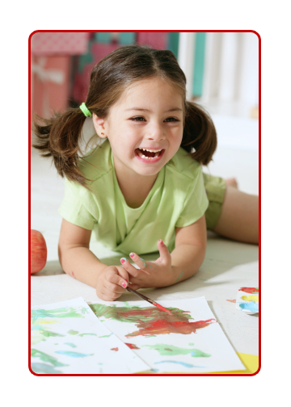

About Us
Pomme D'Api Preschool is a non-profit, parent-run preschool catering to families who desire to have their children benefit from the richness of a French Immersion Program or who are Francophone themselves needing to have their children continue learning in their mother tongue. Licensed and inspected by the government of British Columbia through the Vancouver City Health Department under the Community Care Facilities Act, the preschool is completely self-supporting and managed by a parent board.
The French Immersion Program was started in 1983 by a group of parents who decided to establish a preschool where children of 3 to 5 years of age could be introduced to the French language through a "creative play" experience.
The Programme Francophone was established in September of 1994. It is designed for French speaking children and for children of French speaking parent(s). This program includes the Modèle de Francisation distributed by the Association of Francophone Parents to only 10 preschools throughout the whole province.
